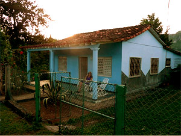

Casa Azul
Varadero, Cuba
Description
Casa Azul offers a very clean and nice casa particular bungalow that is totally independent and completely airconditioned. Its location is one of the best in Varadero, a few meters from the beach and a ranchon for food and drinks.
Leyla and her family are living in front - beside the bungalow.
Amenities
Air Conditioner, Breakfast and dinner service, Double Bed, Extra outside shower, Garden, Kitchen facilities, Parking, Private Bathroom, Private entrance, Phone, Refrigerator, Terrace, Twin beds, TV
Varadero, Cuba